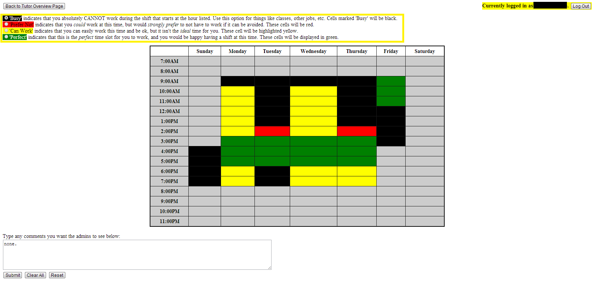
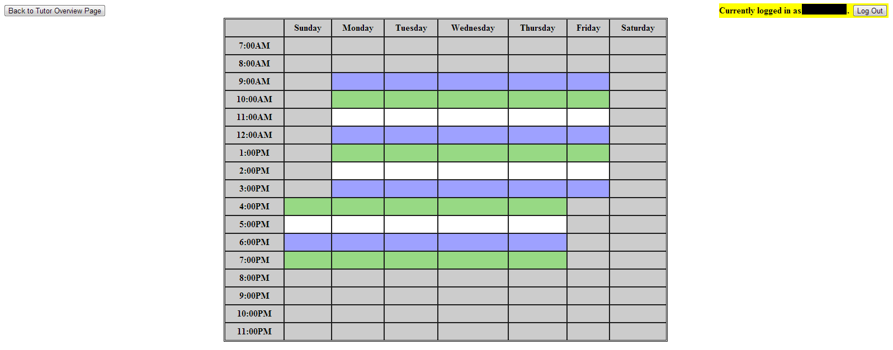

This page is used to submit your available hours so that the scheduling algorithm and administrators can set your schedule. Select the availability you wish to apply by clicking the radio buttons highlighted in yellow below, then click on a cell in the table to change your availability for that shift. The changes you make will not be saved until you click 'Submit' at the bottom of the page. Clicking 'Clear All' will clear the form so that no shift has any preference associated with it. Clicking 'Reset' will reset the form to whatever your requests were when the page loaded. The comment box can be used to submit any comments you wish the administrators to see when they are making your schedule. You do not need to submit anything, but it may be useful for you.
While the scheduling software does its best to give everybody the optimum schedule, please note that there are times at which point it will be impossible for us to keep everybody happy. The schedule you are about to submit is a request, and in no way guarantees that your assigned shifts will perfectly reflect it.
This page is used to view the hours that you have been assigned by the scheduling algorithm and the administrators. Shifts you have been assigned to work in SASB are highlighted blue, whereas shifts during which you have been assigned to work in Greenlaw are highlighted green.
